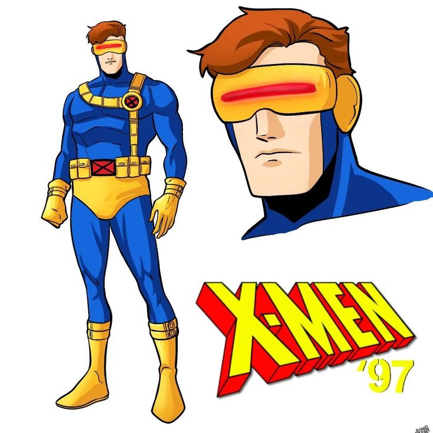

 Ciclope, ou Scott Summers, é um dos membros fundadores dos X-Men. Seus poderes mutantes permitem disparar rajadas de energia concussiva de seus olhos, mas ele não pode controlá-las sem um visor de quartzo rubi. Na infância, Scott sofreu um acidente de avião que matou seus pais e o separou de seu irmão, Alex. Posteriormente, ele foi acolhido pelo Professor Charles Xavier e treinado para usar suas habilidades. Como líder dos X-Men, ele é dedicado à causa mutante, mas enfrenta grandes desafios e tragédias, como o complicado relacionamento com Jean Grey e o fardo de tomar decisões difíceis para proteger sua espécie. Ciclope passou por várias transformações, incluindo ser possuído pela Força Fênix, que o levou a matar acidentalmente o Professor Xavier, o que abalou sua reputação. Mesmo assim, ele permanece um dos personagens mais importantes e influentes dos X-Men, conhecido por sua liderança e determinação em garantir a sobrevivência dos mutantes.